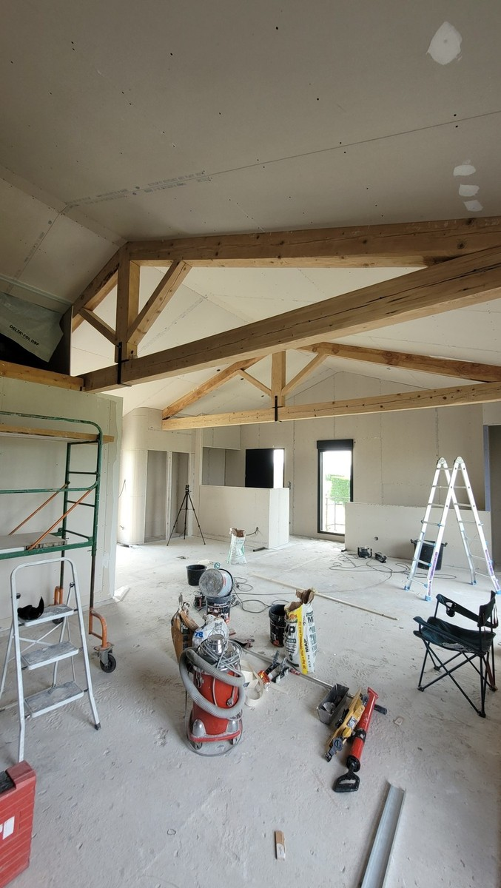

Cloison placo
Création de séparation intérieure, modification d’un espace ou reprise d’une cloison existante selon le projet.
Création ou modification de cloisons, doublages, faux plafonds et plafonds suspendus en plaques de plâtre, avec bandes à joints et préparation pour la finition.
Les cloisons et faux plafonds permettent de redistribuer une pièce, masquer certains éléments techniques, reprendre un plafond ou préparer une rénovation plus complète.
Création de séparation intérieure, modification d’un espace ou reprise d’une cloison existante selon le projet.
Création ou reprise d’un plafond en plaques de plâtre pour obtenir une surface propre et régulière.
Habillage d’un mur existant et préparation d’un support adapté à la finition prévue.
Pose de plaques de plâtre sur des volumes intérieurs, avant bandes à joints et peinture.


Après la pose des plaques, les bandes à joints et les enduits préparent les surfaces. Un ratissage peut être prévu si l’état général du support le nécessite avant peinture.
Indiquez la commune, les dimensions approximatives, le type de pièce et joignez quelques photos lorsque c’est possible.
La longueur, la hauteur approximative, le type de pièce et quelques photos sont utiles pour préparer un premier échange.
Cela dépend de l’état du plafond existant et de la continuité nécessaire pour obtenir une finition correcte. Une photo permet souvent d’orienter le diagnostic.
Elles peuvent être intégrées au chantier afin de préparer les plaques avant la finition. Le périmètre exact est précisé dans le devis.
Oui, le chantier peut regrouper placo, bandes, préparation des supports et peinture lorsque cela correspond au besoin.
Pas toujours pour le premier échange. Selon le projet, les dimensions et des photos peuvent permettre de préparer le chiffrage avant de décider si une visite est nécessaire.